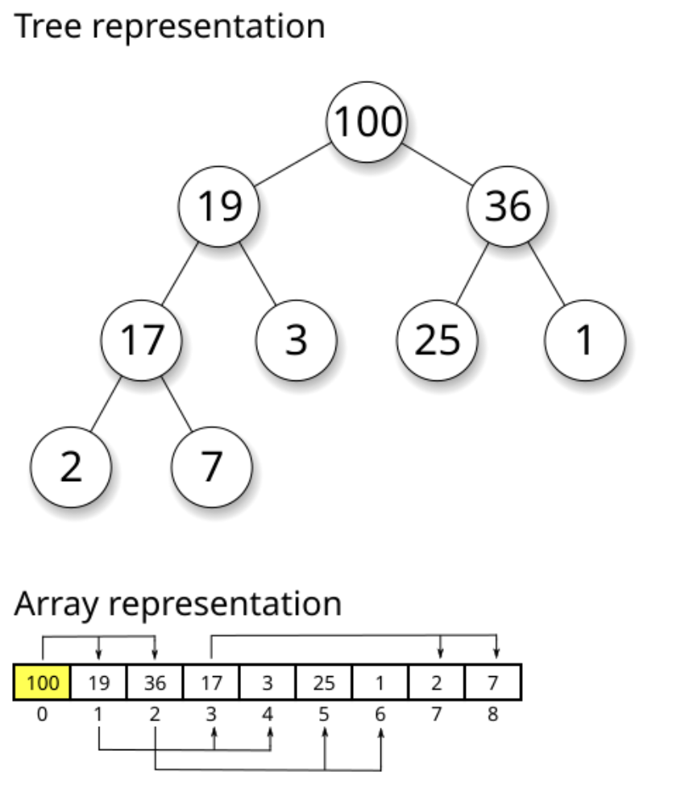

Understanding Computational Complexity
A Comprehensive Guide to Algorithm Performance Analysis
On For Today
Let’s explore algorithm complexity!
Topics covered in today’s discussion:
- ⚡ O(1) - Constant Time — Lightning-fast operations that never slow down
- 🔍 O(log n) - Logarithmic Time — Divide and conquer excellence
- 🏥 Heap-Based Structures — Smart priority management
- 💥 O(2^n) - Exponential Time — The recursive explosion
- 🗺️ Travelling Salesman Problem — Real-world optimization challenges
- 📊 Performance Comparison — Understanding when to use each approach

Why Algorithm Complexity Matters
Important
Real-World Impact
Understanding algorithm complexity helps you:
- ⚡ Build Faster Software — Choose the right algorithm for the job
- 💰 Save Money — Efficient code means lower server costs
- 🌍 Scale Applications — Handle millions of users smoothly
- 🔋 Reduce Energy Usage — Green computing through efficiency
- 🎯 Make Smart Trade-offs — Balance speed, memory, and complexity
Note
The Big Idea: Small algorithmic choices can mean the difference between a program that runs in seconds versus one that takes years. Let’s explore how different complexity classes affect real-world performance!
Part 1: O(1) - Constant Time
The Speed Champion ⚡
O(1) means the algorithm takes the same amount of time regardless of input size!
Key Insight: Think of O(1) operations like light switches 💡. Whether you have 1 light or 1000 lights in your house, each switch always takes the same time to flip!
What is O(1) - Constant Time?
The Superpower of Algorithms ⚡
O(1) means the algorithm takes the same amount of time no matter how much data you give it!
Real-World Analogy: * Like a valet parking service - you hand over your ticket and get your car back instantly * Whether there are 10 cars or 10,000 cars in the lot, it takes the same time! * The valet has a direct system to find your exact car
Performance Guarantee 📊
- 10 items → 1 step
- 100 items → 1 step
- 1,000,000 items → 1 step
- Same speed forever!
Key Insight 🔑
The algorithm has a “shortcut” that goes directly to the answer without checking other data!
Magic Question:
“Can I get the answer without looking at most of the data?”
What Makes O(1) So Fast?
The Secret Ingredients 🎯
O(1) algorithms use smart data organization and direct access patterns
Hash Tables (Dictionaries/Sets)
# Python dictionary (hash table) uses a hash function
# to map keys to memory locations for O(1) access
student_grades = {
"Alice": 95,
"Bob": 87,
"Charlie": 92
}
# Hash function calculates EXACTLY where
# "Alice" is stored in memory
# No searching required - direct jump to the value!
grade = student_grades["Alice"] # O(1)!How it works:
- Hash function:
"Alice"→ memory location 147 - Go directly to location 147
- Get the value (95)
- Done! No searching needed!
Array Indexing
# Arrays store data in consecutive memory locations
# This allows direct access via index calculation
scores = [95, 87, 92, 78, 85]
# 0 1 2 3 4 (indices)
# Computer calculates memory address using formula:
# Address = base_address + (index × element_size)
# This mathematical calculation is O(1)!
first_score = scores[0] # O(1) - instant access
third_score = scores[2] # O(1) - instant accessMathematical Magic:
- Memory address = Base + (2 × 4 bytes)
- Jump straight to the answer!
- No need to check other elements
Interactive O(1) Dictionary Demo
See O(1) in Action! 🎮
Try looking up different students’ grades. Notice how it’s always instant!
Student Grade Lookup - O(1) Dictionary Access
Mini Challenge: O(1) Operations
Practice O(1) Thinking! 🧑💻
Try these exercises to understand constant time operations:
Challenge 1: Phone Book
# Create your own phone book using a dictionary
# Dictionaries provide O(1) lookup time
phone_book = {}
# Add contacts - each insertion is O(1)
phone_book["Mom"] = "555-0123"
phone_book["Pizza"] = "555-PIZZA"
phone_book["Friend"] = "555-9999"
# Look up numbers instantly - O(1) access
print(phone_book["Mom"])
# YOUR TASK: Add 5 contacts
# and time the lookups!
import time # Import time module for benchmarking
start = time.time() # Record start time
# Add your lookups here
result = phone_book["Mom"] # O(1) lookup
end = time.time() # Record end time
print(f"Time: {end-start}s") # Display elapsed timeChallenge 2: Class Enrollment
# Check which classes a student is in using sets
# Sets provide O(1) membership testing ("in" operator)
math_class = {"Alice", "Bob"}
science_class = {"Bob", "Diana"}
history_class = {"Alice", "Eve"}
student = "Alice" # Student to check
enrolled = [] # List to store enrolled classes
# O(1) membership checking with sets!
# Each "in" check is constant time
if student in math_class:
enrolled.append("Math")
if student in science_class:
enrolled.append("Science")
if student in history_class:
enrolled.append("History")
print(f"{student}: {enrolled}")
# YOUR TASK: Check all students
# Notice how fast it is even with many classes!Bonus: O(1) Fibonacci with Binet’s Formula!
The Mathematical Shortcut ✨
Believe it or not, you can calculate any Fibonacci number in O(1) time using pure mathematics!
Binet’s Formula
Instead of recursion or iteration, use this closed-form mathematical formula:
\[F(n) = \frac{\varphi^n - \psi^n}{\sqrt{5}}\]
Where:
- \(\varphi = \frac{1 + \sqrt{5}}{2} \approx 1.618\) (golden ratio)
- \(\psi = \frac{1 - \sqrt{5}}{2} \approx -0.618\)
Complexity: O(1) - constant time! 🚀
- Just pure math calculation: No loops, No recursion
- Later, we will see that there are other ways to calculate sequences which take much more time with complexity O(2^n), so this is a huge improvement!
Python Implementation
import math # Need sqrt and pow functions
def fibonacci_binet(n):
"""
Calculate nth Fibonacci number using Binet's formula - O(1)!
This is a closed-form mathematical solution that computes
the result directly without any loops or recursion.
Time Complexity: O(1) - constant time
"""
# Calculate the golden ratio (phi)
sqrt_5 = math.sqrt(5)
phi = (1 + sqrt_5) / 2 # ≈ 1.618 (golden ratio)
psi = (1 - sqrt_5) / 2 # ≈ -0.618
# Apply Binet's formula
# F(n) = (φ^n - ψ^n) / √5
fib_n = (phi**n - psi**n) / sqrt_5
# Round to nearest integer (handles floating-point precision)
return round(fib_n)
# Test it out!
print("First 15 Fibonacci numbers using O(1) formula:")
for i in range(15):
print(f"F({i}) = {fibonacci_binet(i)}")
# Direct calculation - instant even for large n!
print(f"\nF(50) = {fibonacci_binet(50):,}")
print(f"F(100) = {fibonacci_binet(100):,}")
# Compare speeds
import time
start = time.perf_counter()
result = fibonacci_binet(1000)
elapsed = time.perf_counter() - start
print(f"\nF(1000) calculated in {elapsed*1000000:.2f} microseconds!")Trade-off: Works great for most values, but floating-point precision limits accuracy for very large n (typically n > 70).
Part 2: O(log n) - Logarithmic Time
The Smart Divider 🧠
O(log n) means the algorithm halves the problem with each step!
Key Insight: Like playing “20 Questions” - each question eliminates half the possibilities. Guess a number from 1-1000? Only takes ~10 guesses!
What is O(log n) - Logarithmic Time?
The Smart Problem Solver 🧠
O(log n) means the algorithm halves the problem with each step!
Real-World Analogy:
- Like playing “20 Questions” - each answer eliminates half
- Guessing a number from 1-1000? “Is it > 500?” cuts it in half!
- 32 billion items → Only 32 steps maximum!
Incredible Scaling 📊
- 1,000 items → ~10 steps
- 1,000,000 items → ~20 steps
- 1,000,000,000 items → ~30 steps
- Mind-blowing efficiency!
Key Insight 🔑
Algorithm eliminates half the possibilities each step.
Magic Question:
“Can I eliminate half the data without checking it?”
If yes → Achieve O(log n)!
Binary Search - The Classic O(log n)
How Binary Search Works
def binary_search(arr, target):
"""Search for target in sorted array using binary search - O(log n)"""
left = 0 # Start of search range
right = len(arr) - 1 # End of search range
# Continue searching while range is valid
while left <= right:
# Find middle index (integer division)
mid = (left + right) // 2
# Check if we found the target
if arr[mid] == target:
return mid # Found! Return the index
# Target is in the right half
elif arr[mid] < target:
left = mid + 1 # Eliminate left half
# Target is in the left half
else:
right = mid - 1 # Eliminate right half
return -1 # Not found in array
# Find 7 in sorted list
numbers = [1,3,5,7,9,11,13,15]
position = binary_search(numbers, 7)
print(f"Found at index {position}")Why O(log n)?
Each step cuts the search space in half!
Step-by-Step Example
Search for 7 in [1,3,5,7,9,11,13,15]:
- Check middle (index 3): 7 == 7 ✓
- Found in 1 step!
Search for 13:
- Check mid (7): 13 > 7, go right
- Check mid (11): 13 > 11, go right
- Check mid (13): 13 == 13 ✓
- Found in 3 steps!
With 8 items, max 3 steps (log₂ 8 = 3) With 1000 items, max 10 steps!
Interactive Binary Search Demo
Watch O(log n) in Action! 🎮
See how binary search eliminates half the data with each step!
Binary Search Visualizer - O(log n) Divide and Conquer
Mini Challenge: Binary Search Practice
Experience O(log n) Power! 🧑💻
Challenge 1: Search Race
import time # Used to measure how long code takes to run
import random # Used to generate random numbers and pick random targets
# Create a large sorted dataset
size = 100000
# Generate random numbers, then sort them (required for binary search)
data = sorted(random.randint(1, 1000000) for _ in range(size))
# ---------------------------
# Linear Search (O(n))
# ---------------------------
def linear_search(arr, t):
# Go through each element one by one
for i, val in enumerate(arr):
# If we find the target, return its index
if val == t:
return i
# If not found, return -1
return -1
# ---------------------------
# Binary Search (O(log n))
# ---------------------------
def binary_search(arr, t):
# Start with the full range of the list
left, right = 0, len(arr)-1
# Keep searching while the range is valid
while left <= right:
# Find the middle index
mid = (left + right) // 2
# If middle element is the target, return it
if arr[mid] == t:
return mid
# If target is larger, ignore the left half
elif arr[mid] < t:
left = mid + 1
# If target is smaller, ignore the right half
else:
right = mid - 1
# If not found, return -1
return -1
# ---------------------------
# Benchmarking section
# ---------------------------
# Number of times we repeat the test (for more accurate results)
trials = 100
# Variables to store total time for each algorithm
linear_total = 0
binary_total = 0
# Run the experiment multiple times
for _ in range(trials):
# Pick a random value from the list to search for
target = random.choice(data)
# ---- Time linear search ----
start = time.perf_counter() # Start timer
linear_search(data, target) # Run search
linear_total += time.perf_counter() - start # Add elapsed time
# ---- Time binary search ----
start = time.perf_counter() # Start timer
binary_search(data, target) # Run search
binary_total += time.perf_counter() - start # Add elapsed time
# ---------------------------
# Results
# ---------------------------
# Compute and print average time per search
print(f"Linear avg: {linear_total/trials:.8f}s")
print(f"Binary avg: {binary_total/trials:.8f}s")
# Show how many times faster binary search is
print(f"Binary is {linear_total/binary_total:.1f}x faster")Challenge 2: Heap Priority Queue
import heapq # Provides heap (priority queue) functions
# This list will store our heap (priority queue)
# Python uses a min-heap by default
emergency_room = []
# Add patients as (priority, name)
# Lower number = higher priority (1 is most urgent)
patients = [
(1, "Heart Attack"),
(5, "Broken Arm"),
(2, "Severe Bleeding"),
(8, "Checkup"),
(3, "Chest Pain"),
]
# ---------------------------
# Adding patients to the heap
# ---------------------------
for priority, condition in patients:
# Push each patient into the heap
# heapq automatically keeps the smallest priority at the front
heapq.heappush(emergency_room, (priority, condition))
# Print confirmation of addition
print(f"Added: {condition}")
# ---------------------------
# Treating patients by priority
# ---------------------------
print("\nTreating by priority:")
# Continue until no patients remain
while emergency_room:
# Remove and return the patient with the highest priority
# (i.e., the smallest number)
priority, condition = heapq.heappop(emergency_room)
# Print which patient is being treated
print(f"{condition} (P{priority})")
# Each push/pop operation takes O(log n) time
# because the heap reorganizes itself after each changePart 3: Heap-Based Priority Queues
Smart Organization for Fast Access 🏥
Heaps maintain partial ordering for O(log n) operations!
What Are Heaps?
## The Smart Organizer 🏥
Heaps maintain priority order with O(log n) efficiency!
Real-World Analogy:
- Like hospital triage - critical patients first
- Don’t need perfect sorting, just quick access to highest priority
- Add/remove patients in log(n) time!

Wikipedia: https://en.wikipedia.org/wiki/Heap_%28data_structure%29
Interactive Heap Operations Demo
Watch Heap Operations in Action! 🎮
See how heaps maintain order with O(log n) insertion and removal!
Min-Heap Visualizer - O(log n) Operations
Code to Demonstrate Heaps?
Heap Property
Key Benefits: * Fast access to min/max: O(1) * Fast insertion: O(log n) * Fast removal: O(log n)
Python Heap Example
import heapq # Python's built-in heap implementation
# Create an empty min-heap
# Min-heap property: parent <= children
heap = []
# Add items - each push is O(log n)
# Heap automatically reorganizes to maintain property
heapq.heappush(heap, 5)
heapq.heappush(heap, 2)
heapq.heappush(heap, 8)
heapq.heappush(heap, 1)
print(heap) # [1, 2, 8, 5] - partially ordered
# Get and remove minimum - O(log n)
# Heap reorganizes after removal
min_val = heapq.heappop(heap)
print(min_val) # 1 (smallest element always at top)
# Heap automatically maintains order after each operation!When to Use Heaps
Important
Perfect Use Cases:
- 🏥 Priority Queues - Process items by importance
- 📊 Finding Top-K Elements - Get k largest/smallest efficiently
- 🎮 Event Scheduling - Handle events in time order
- 🚗 Route Planning - Dijkstra’s shortest path algorithm
- 📈 Streaming Data - Maintain running median/statistics
Trade-off: Not fully sorted, just maintains priority relationship
Part 4: O(2^n) - Exponential Time
The Recursive Monster 💥
O(2^n) means time doubles with each additional element!
Warning: Exponential algorithms become impossible very quickly. Even 50 items can take longer than the age of the universe!
What is O(2^n) - Exponential Time?
The Recursive Explosion 💥
O(2^n) means the algorithm’s time doubles with each additional input!
Real-World Analogy: * Like a chain letter - each person sends to 2 more * Day 1: 1 person, Day 2: 2, Day 3: 4… * Day 30: Over 1 billion people!
Explosive Growth 🚀
- 10 items → 1,024 operations
- 20 items → 1,048,576 operations
- 30 items → 1,073,741,824 operations
- Each +1 item doubles the work!
Key Insight 🔑
Typically uses branching recursion - each call creates multiple recursive calls.
Danger Signal:
“Does my function call itself multiple times?”
If yes → Might be O(2^n)!
Naive Fibonacci - Classic O(2^n)
The Exponential Fibonacci
def fibonacci(n):
"""Naive recursive Fibonacci - O(2^n) exponential time!"""
# Base case: fib(0) = 0, fib(1) = 1
if n <= 1:
return n
# TWO recursive calls - this creates exponential growth!
# Each call branches into two more calls
return fibonacci(n-1) + fibonacci(n-2)
# The explosion:
# fib(5) calls fib(4) and fib(3)
# fib(4) calls fib(3) and fib(2)
# fib(3) is calculated MULTIPLE times! (wasteful redundancy)
print(fibonacci(10)) # Result: 55
# But took ~177 function calls to compute!
# Time complexity: O(2^n) - doubles with each nWhy O(2^n)? * Each call creates 2 more calls * Massive redundant computation * Binary tree of recursion
The O(n) Solution
def fibonacci_fast(n):
"""Iterative Fibonacci - O(n) linear time!"""
# Base case
if n <= 1:
return n
# Iterative approach: O(n)
# Only stores two previous values
prev, curr = 0, 1
# Build up from fib(2) to fib(n)
for _ in range(2, n + 1):
prev, curr = curr, prev + curr # Simultaneous assignment
return curr
# OR use memoization (caching)
from functools import lru_cache
@lru_cache(maxsize=None) # Cache all results
def fib_memo(n):
"""Memoized Fibonacci - O(n) with caching"""
if n <= 1:
return n
# Same recursive structure, but results are cached
return fib_memo(n-1) + fib_memo(n-2)
# Now each fib(k) computed only once!
print(fibonacci_fast(50)) # Instant! No exponential explosionInteractive Fibonacci Demo
Watch the Exponential Explosion! 🎮
See how naive Fibonacci creates massive redundant calculations!
Naive Fibonacci - O(2^n) Recursive Explosion
Mini Challenge: Optimization Challenge
Compare O(2^n) vs O(n)! 🧑💻
Challenge: Fibonacci Performance
import time # For timing execution
from functools import lru_cache # For memoization decorator
# Naive O(2^n) - exponential time complexity
def fib_slow(n):
"""Naive recursive Fibonacci without caching"""
if n <= 1:
return n
# Each call creates 2 more calls - exponential growth!
return fib_slow(n-1) + fib_slow(n-2)
# Optimized O(n) with memoization (caching)
@lru_cache(maxsize=None) # Decorator caches all results
def fib_fast(n):
"""Optimized Fibonacci with memoization"""
if n <= 1:
return n
# Same structure, but cached results prevent recalculation
return fib_fast(n-1) + fib_fast(n-2)
# Test both approaches with different input sizes
test_values = [10, 15, 20, 25, 30]
print("n\tSlow Time\tFast Time\tSpeedup")
for n in test_values:
# Time slow version (O(2^n))
start = time.time()
result_slow = fib_slow(n)
slow_time = time.time() - start
# Time fast version (O(n))
fib_fast.cache_clear() # Clear cache for fair comparison
start = time.time()
result_fast = fib_fast(n)
fast_time = time.time() - start
# Calculate speedup factor
speedup = slow_time / max(fast_time, 0.000001) # Avoid division by zero
print(f"{n}\t{slow_time:.4f}s\t\t{fast_time:.6f}s\t{speedup:.0f}x")
# Stop if slow version takes too long
if slow_time > 5:
print("Stopping - exponential version too slow!")
break
# YOUR TASK: What patterns do you notice?
# How does the speedup change as n increases?
# Notice: speedup grows exponentially!Part 5: Travelling Salesman Problem
The Ultimate Optimization Challenge 🗺️
Finding the shortest route through all cities!
What is the Travelling Salesman Problem?
The Ultimate Route Challenge 🗺️
The Problem: Visit every city exactly once and return home using the shortest possible route.
Real-World Applications:
- 🚚 Delivery Services - UPS saves millions optimizing routes
- 🏭 Circuit Board Manufacturing - Drilling holes efficiently
- 🧬 DNA Sequencing - Optimal gene arrangements
- 🚌 School Bus Routes - Getting kids to school faster
Why It Matters 🚚
- Amazon saves fuel and time
- Manufacturing saves money
- Everyone gets faster service
- Reduces carbon emissions
The Challenge ⚡
- 3-4 cities: Easy
- 10 cities: 3,628,800 routes!
- 20 cities: More routes than atoms in universe!
- Optimal solution: O(n!) factorial time
Key Question: How do we find good routes without checking every possibility?
TSP Complexity: The Factorial Explosion
Important
For n cities, there are (n-1)!/2 unique routes
Why? Fix starting city, divide by 2 (clockwise/counterclockwise are same).
The Numbers
import math # For factorial calculation
def tsp_routes(n):
"""Calculate number of unique TSP routes for n cities"""
if n <= 1:
return 0
# Formula: (n-1)! / 2
# Fix start city, divide by 2 (clockwise = counterclockwise)
return math.factorial(n-1) // 2
# Watch the factorial explosion!
for n in range(3, 11):
routes = tsp_routes(n)
print(f"{n} cities: {routes:,} routes")
# Notice: each additional city multiplies routes dramatically!Results:
- 3 cities → 1 route, 5 cities → 12 routes
- 10 cities → 181,440 routes, 15 cities → 43,589,145,600 routes!
Time to Check All Routes
Assuming 1 microsecond per route:
- 10 cities: 0.18 seconds ✓
- 15 cities: 12 hours ⚠️
- 20 cities: 77 years 🛑
- 25 cities: 490 billion years! 💀
Reality: Need smart approximations, not exhaustive search!
Interactive TSP Demo
Plan Your Route! 🎮
Click on the map to add cities, then find the best route!
🗺️ Interactive Travelling Salesman Demo
Mini Challenge: TSP Approximations
Smart Route Planning! 🧑💻
Challenge: Nearest Neighbor Heuristic
import random # For generating random city positions
import math # For distance calculations
# Generate random cities in a 100x100 grid
def generate_cities(n):
"""Create n cities with random (x, y) coordinates"""
return [(random.randint(0, 100),
random.randint(0, 100))
for _ in range(n)]
# Calculate Euclidean distance between two cities
def distance(city1, city2):
"""Calculate straight-line distance between cities"""
x1, y1 = city1
x2, y2 = city2
# Pythagorean theorem: sqrt((x2-x1)^2 + (y2-y1)^2)
return math.sqrt((x2-x1)**2 + (y2-y1)**2)
# Nearest neighbor heuristic - O(n²) approximation algorithm
def nearest_neighbor(cities):
"""Greedy TSP approximation: always visit nearest unvisited city"""
unvisited = cities.copy() # Copy to avoid modifying original
route = [unvisited.pop(0)] # Start at first city
# Continue until all cities visited
while unvisited:
current = route[-1] # Current city is last in route
# Find nearest unvisited city using min() with key function
nearest = min(unvisited,
key=lambda c: distance(current, c))
route.append(nearest) # Add to route
unvisited.remove(nearest) # Mark as visited
# Return to start city to complete the tour
route.append(route[0])
return route
# Calculate total distance of a route
def route_distance(route):
"""Sum distances between consecutive cities in route"""
total = 0
# Add distance between each pair of consecutive cities
for i in range(len(route) - 1):
total += distance(route[i], route[i+1])
return total
# Test it!
cities = generate_cities(10) # Create 10 random cities
route = nearest_neighbor(cities) # Find approximate route
dist = route_distance(route) # Calculate total distance
print(f"Route distance: {dist:.2f}")
print("Route:", route)
# Not optimal, but fast O(n²) and reasonably good!
# Avoids O(n!) brute force - practical for real-world useComplexity Comparison Summary
Choosing the Right Algorithm
| Complexity | Name | Example | 10 items | 1000 items | When to Use |
|---|---|---|---|---|---|
| O(1) | Constant | Dict lookup | 1 step | 1 step | Direct access possible |
| O(log n) | Logarithmic | Binary search | 3 steps | 10 steps | Data is sorted |
| O(n) | Linear | Simple search | 10 steps | 1000 steps | Must check each item |
| O(n log n) | Log-linear | Merge sort | 33 steps | 10,000 steps | Good general sorting |
| O(n²) | Quadratic | Bubble sort | 100 steps | 1,000,000 steps | Small datasets only |
| O(2^n) | Exponential | Naive Fibonacci | 1024 steps | Impossible | Avoid if possible! |
| O(n!) | Factorial | TSP (brute force) | 3.6M steps | Impossible | Need approximations |
Key Takeaways
Important
What We Learned Today:
- ⚡ O(1) - Hash tables give instant access regardless of data size
- 🔍 O(log n) - Binary search and heaps scale beautifully through divide-and-conquer
- 🏥 Heaps - Maintain priority order with O(log n) operations
- 💥 O(2^n) - Exponential algorithms become impossible quickly - use memoization!
- 🗺️ TSP - Real-world problems often require smart approximations, not perfect solutions
- 📊 Trade-offs - Choose algorithms based on data size, structure, and requirements
Tip
The Big Picture: Understanding complexity helps you write efficient code that scales. Small algorithmic choices make huge differences in real-world performance!
Next Steps & Practice
Note
To Continue Learning About Complexity 🤔:
- 📚 Study more sorting algorithms (merge sort, quick sort, heap sort)
- 🔬 Analyze algorithms in your own code
- 💻 Practice on coding platforms (LeetCode, HackerRank)
- 🎯 Learn about dynamic programming (turns O(2^n) → O(n))
- 🚀 Explore graph algorithms (Dijkstra, A*, etc.)
Remember: The best algorithm depends on your specific problem, data size, and constraints. There’s no one-size-fits-all solution!